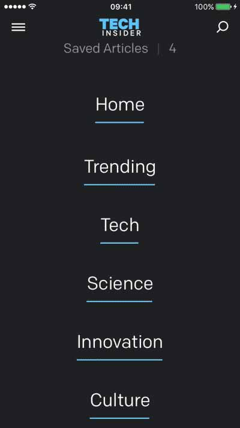
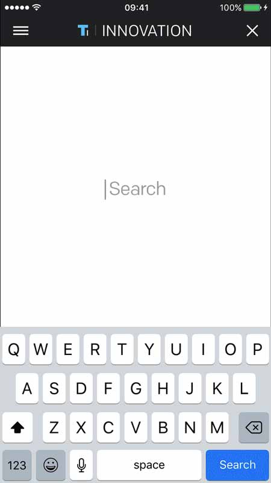
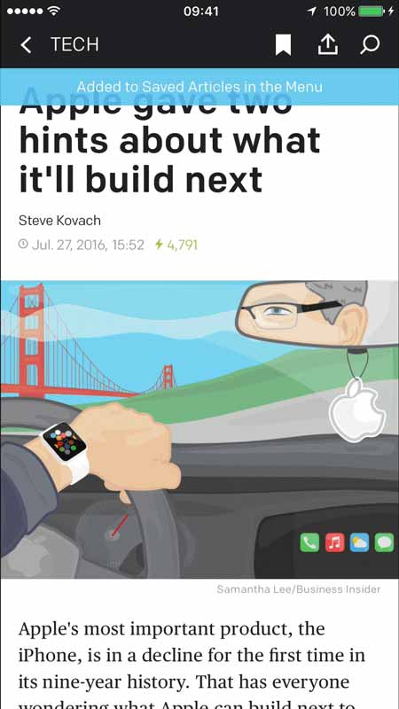
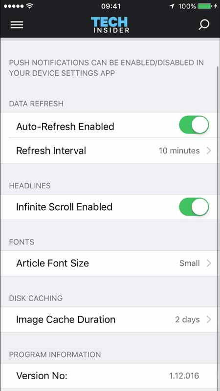

A largely-populated news and information app, covering topics such as science, tech, military, lifestyle, social trends and more. Simply put... it seems TI has an article for just about everything worth knowing.
Tech Insider is a sub-branch of Business Insider, a well-known, respected authority covering hot-button topics across a multitude of industries. TI’s target audience spreads across a wide range of consumers from all ages, demographics, economic
statuses and generations.
It’s obvious that the focus of TI is to deliver relevant news and information, free from distracting UI or ad space. This strategy allows users to immediately speed through or lazily scroll a plethora of content.
A child-project of Business Insider covering topics ranging from Science and Technology to lifestyle and social trends. Simply put... it seems they have an article for just about everything worth knowing.
This isn’t your typical dropdown menu. This one has clean lines, good use of color. The menu also slides down to overlay the full screen, which is great for my hoof thumbs! No longer will you tap the wrong link. There’s also a Saved Articles section, but we’ll get to that a little later. In case you're wondering, all the fine print and copyright info is at the bottom, too...
This is a simple, effective, search field. Notice, that I said “field” and not “bar”. It is a subtle, but incredibly refreshing to get away form the plain, boring search bar. A background color --beyond white-- would be nice, but we’ll let it slide on the basis of functionality. The highlighting of the searched term isn't the best looking, but again, functionality wins!
It may seem simple and/or expected nowadays, but having the ability to quickly save an article for later is HUGE for people on the go. TI makes it simple --just a single tap. It even lets you know how many you have archived. Sharing is also a breeze with a convenient icon, giving you control. I send them to myself via text or add to Notes when I need multiple save locations.
Control...it is what we want as users. TI understands this well and provides options most apps make you dig for, if available at all. Refresh frequency, caching duration, infinite scroll, TOTAL CONTROL! Once again, TI provides the subtlties users come to expect from apps. I'm very impressed with the usability and care taken by TI overall.
